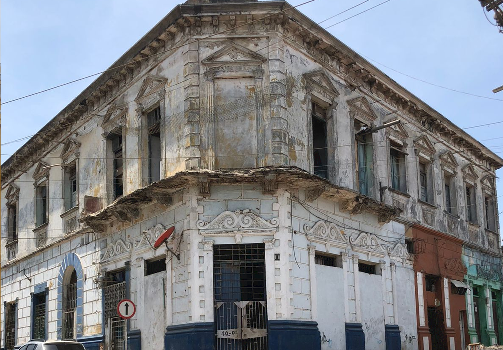

LA PAJARERA



Es un edificio republicano con marcada influencia neoclásica, las ventanas y puertas están acompañadas de molduras decorativas que remontan a lo clásico mediante adornos con figuras fitomorfas e imitaciones de columnas y frontones. Del estilo republicano toma elementos como la imitación de los bloques de sillares, almohadillados y una especie de basamento cercano a las puertas.
Esta sección tiene una inspiración neoclásica con una cornisa con molduras y frisos con bajos relieves, combinados con ménsulas adornadas con figuras fitomorfas.
Las manos que atizan los fogones y dan palote a las ollas, son de las mujeres y los hombres que por años han decidido rendir homenaje a su herencia culinaria. Son las vidas de familias que llegaron al barrio y desde entonces no han dejado de transformar los alimentos para cocinar singulares preparaciones, de aromas, colores y sabores que evocan, principalmente, lo afro en Barrio Abajo.
En la edificación llegó a ser ocupada como una agencia de aduanas. Dicha agencia era la encargada de contactar las compras en el exterior con otras empresas de exportaciones e importaciones, así mismo coordinar los transportes marítimos de las mercancías. Por otro lado, durante la década de los años 90 funcionaba una barbería, la cual, llegó a ser de las más importantes de la ciudad de Barranquilla brindando sus servicios a personajes ilustres del momento.
Las puertas de la edificación presentan dos cuerpos en madera, cuenta con gran altura y con una rejilla de ventilación en madera protegida por una reja en hierro forjado. A cada lado de las puertas posee dos inspiraciones de columnas con capiteles fitomorfos y un dintel de una sola viga, también posee una moldura en yeso con motivos fitomorfos.
Los balcones de la pajarera son en concreto, presentan unas ménsulas que son elementos estructurales de soporte, pero que son adornados para que hagan parte de la intensa decoración que presenta el edificio, que tienen una forma de volutas envueltas.
Estas ventanas se encuentran adornadas con dos imitaciones de columnas con capiteles fitomorfos, un friso con adornos en el arquitrabe o dintel y posee una inspiración de frontón griego con un adorno fitomorfo de molduras en el centro. En la parte media de la ventana posee una moldura de Marquette y en el centro un escudo de armas que representa a la familia que vivió allí, posee unas ventanas en madera, con rejillas de ventilación en la parte de arriba.
Actualmente parte de la edificación está ocupada por un taller electromecánico, también cuenta con una barbería y en otro de los módulos que lo conforman se realiza venta de comida típica, propia de la región.